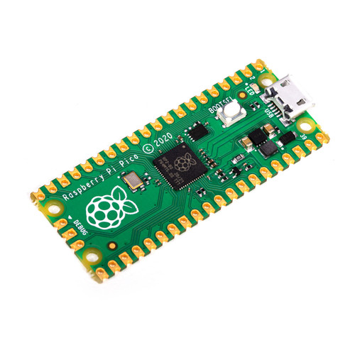
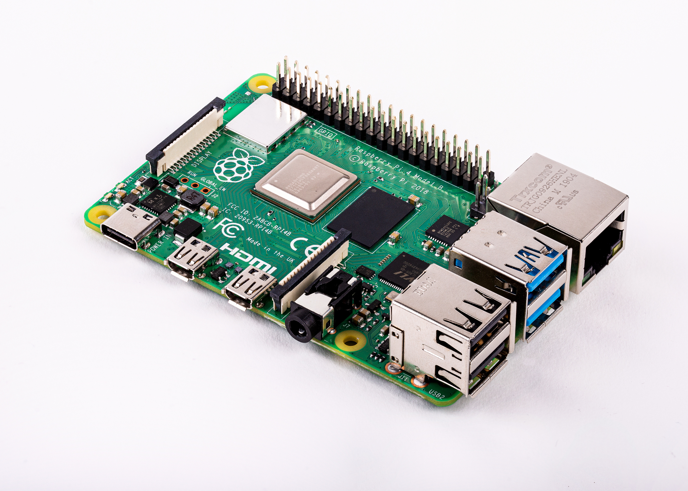

Design Goals
Originally the goals for the project was to be able to interpret the whole audible spectrum of human hearing. That ranges from 20-20k hertz. By the Nyquist theorm this of course dictated we would need an analog to digital converter with a sample rate of at least 40k samples per second.
Hardware
Due to easy of access and past experience with them, we chose to use a raspberry pi pico for our ADC, as it had very easy methods of sharing the data with a pi over serial. It was able to acheive sampling rates of up to 400 Ksps which would me more than enough for the project. An arduino was used in order to control the LED matrix as we foudn that was easier than using the raspberry pi directly.
A Raspberry pi was the brains of the project used to do the FFT calculations and send the data to an arduino to be displayed. The class revolved around using this embedded system which is what made us have to use it. The pi demonstrated impresive ability to do this live calculation even for being such a small low power system
We discovered it was much easier to control the LED matrix through an arduino than using the pi directly. Communication between the raspberry pi 4 and the arduino was acheived through UART.